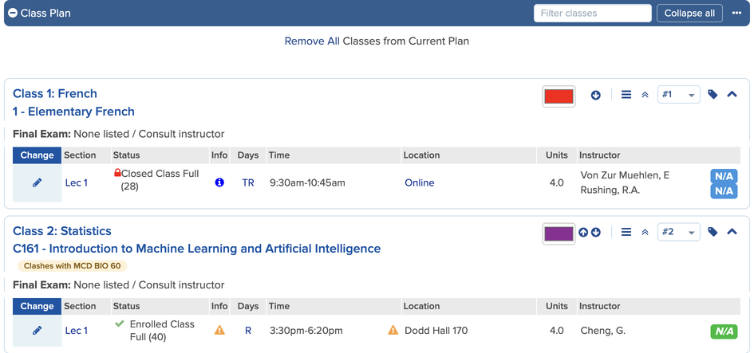
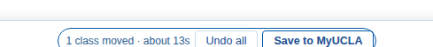
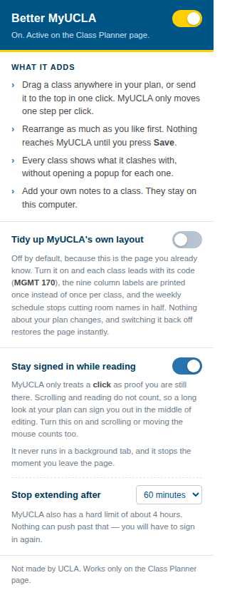

Drag classes around your Class Planner, instead of clicking the arrow one position at a time.
Not made by, endorsed by, or affiliated with UCLA
Rearrange as much as you like first. A bar at the bottom of the window keeps count, and Save then clicks MyUCLA's own arrows for you.

About two minutes, in Chrome or anything built on Chrome.
Download the latest versionchrome://extensions in a new tab.dist folder inside the folder you unzipped.Two things to expect.
Chrome warns about developer-mode extensions every time it starts. That is its standard notice for anything not installed from its store. Dismiss it.
There is no auto-update. For a new version, unzip it over the same folder,
then press reload on the card in chrome://extensions. A different
folder loses your notes and settings.

Click the extension icon in the toolbar. The switch at the top puts the Class Planner back exactly as MyUCLA made it, immediately.
The other switch is optional: MyUCLA counts only clicks as "still here", so reading your plan for fifteen minutes signs you out. Turn it on and scrolling counts too.
be.my.ucla.edu/ClassPlanner/ClassPlan.aspx.MyUCLA can change its pages at any time. When it does, this stops rather than guesses, so the worst case should be that it does nothing. Tell me here. Please blur anything identifying in screenshots.